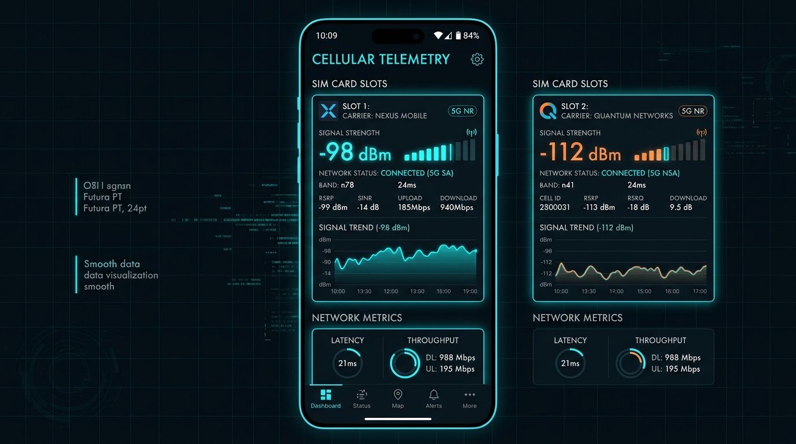

Контроль в движении. Телеметрия без имитаций.
Инженерная платформа для фиксации параметров радиоканала, проверки активных SIM-слотов и аудита сотового трафика в реальном времени. В строгом соответствии с законами Республики Узбекистан и Великобритании.
Архитектура контроля телеметрии
Инструменты для инженеров и менеджеров: от аппаратных микрочипов до сотовых вышек.
Аппаратное считывание SIM и eSIM
Прямой доступ к параметрам сотового радиоядра: уровень мощности в dBm, сотовые идентификаторы вышки CID/TAC, частотные диапазоны LTE Band и 5G NR NSA/SA. Никаких догадок — только чистые инженерные данные.

24-байтный пакет для любых сетей
Специализированный протокол сжатия передает полную диагностику устройства за 24 байта. Работает даже при минимальном уровне 2G/EDGE в удаленных регионах или на перегруженных узлах Лондона без задержек.
0x18 0x02 0xAA 0xFF 0x3F 0x01 0x7E 0x90 0x5C 0x11 0x04 0x22
Нулевой перерасход и проверка биллинга
Сравнение данных радиочипа телефона с тарификацией оператора. Предотвращение скрытых округлений трафика, паразитных фоновых утечек и неожиданных списаний в роуминге.

Инженерные модули Xylen Motion
Интерактивные компоненты визуализации и контроля радиоканала